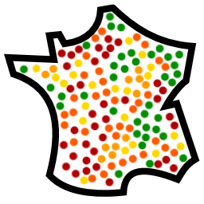

Commune :
X
Intégration des voies et adresses de la commune

Afficher :
Voies
Lieux-dits
Déjà rapprochés dans OSM
Pas encore rapprochés dans OSM
Ayant des adresses référencées dans la BAN
Sans adresses
Trouvé dans OSM et inconnu du fichier Topo